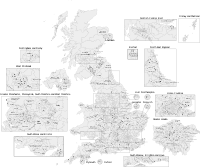

Constituencies of the Parliament of the United Kingdom
| United Kingdom parliamentary constituencies | |
|---|---|
|  Constituencies after the 2023 Periodic Review | |
| Category | Electoral district |
| Location | United Kingdom |
| Number | 650 (as of 2023) |
| Populations | 20,887 (Na h-Eileanan an Iar) - 113,021 (Isle of Wight) |
| Government | |
{kind=link}
| This article is part of a series on |
| Politics of the United Kingdom |
|---|
_(2022).svg) |
|
|
|
|
|
|
| United Kingdom portal |
.svg){kind=link}
{kind=link}
{kind=link}
{kind=link}
The Parliament of the United Kingdom currently has 650 parliamentary constituencies across the constituent countries (England, Scotland, Wales, and Northern Ireland), each electing a single member of parliament (MP) to the House of Commons by the plurality (first past the post) voting system, ordinarily every five years. Voting last took place in all 650 of those constituencies at the United Kingdom general election on 12 December 2019.
The number of seats rose from 646 to 650 at the 2010 general election after proposals made by the boundary commissions for England, Wales, and Northern Ireland (the Fifth Periodic Review of Westminster constituencies) were adopted through statutory instruments.[1][2][3][4] Constituencies in Scotland remained unchanged, as the Boundary Commission for Scotland had completed a review just before the 2005 general election, which had resulted in a reduction of 13 seats.
Primary legislation provides for the independence of the boundary commissions for each of the four parts of the UK, the number of seats for each of the countries, permissible factors to use in departing from any old boundaries, and a strong duty to consult. The Fifth Review was governed by the Parliamentary Constituencies Act of 1986. Under the Parliamentary Voting System and Constituencies Act 2011, as amended by the Parliamentary Constituencies Act 2020, the number of MPs is now fixed at 650. The Sainte-Lagu formula method is used to form groups of seats split between the four parts of the United Kingdom and the English regions (as defined by the NUTS 1 statistical regions of England).[5]
Overview[edit]
The table below gives the number of eligible voters broken down by constituent country, including the average constituency size in each country.
| Year | 2000 | 2010 | 2015 | 2017[6] | 2019[7] | |||||
|---|---|---|---|---|---|---|---|---|---|---|
| Numbers | % | Numbers | % | Numbers | % | Numbers | % | Numbers | % | |
| Total electorate for each constituent country | ||||||||||
| England | 36,994,681 | 83.47% | 38,432,802 | 83.81% | 38,736,146 | 83.57% | 38,693,900 | 83.85% | 39,901,035 | 83.88% |
| Scotland | 3,995,489 | 9.02% | 3,929,956 | 8.57% | 4,099,532 | 8.84% | 3,950,600 | 8.56% | 4,053,056 | 8.52% |
| Wales | 2,225,689 | 5.02% | 2,302,300 | 5.02% | 2,281,754 | 4.92% | 2,261,200 | 4.90% | 2,319,690 | 4.88% |
| Northern Ireland | 1,103,670 | 2.49% | 1,190,635 | 2.60% | 1,236,765 | 2.67% | 1,242,300 | 2.69% | 1,293,971 | 2.72% |
| UK total | 44,319,529 | 45,855,693 | 46,354,197 | 46,148,000 | 47,567,752 | |||||
| Average electorate per constituency for each constituent country | ||||||||||
| England | 69,408 | 101.80% | 72,107 | 102.21% | 72,676 | 101.91% | 72,596 | 102.25% | 74,861 | 102.30% |
| Scotland | 67,720 | 99.32% | 66,609 | 94.42% | 69,484 | 97.43% | 66,959 | 94.31% | 68,696 | 93.87% |
| Wales | 55,642 | 81.61% | 57,558 | 81.59% | 57,044 | 79.99% | 56,530 | 79.62% | 57,992 | 79.24% |
| Northern Ireland | 61,315 | 89.93% | 66,146 | 93.76% | 68,709 | 96.35% | 69,017 | 97.21% | 71,887 | 98.23% |
| Overall UK average | 68,184 | 70,547 | 71,314 | 70,997 | 73,181 | |||||
Geographical size of constituencies[edit]
As the number of electors in each constituency is similar, the constituencies themselves vary considerably in area, ranging from Ross, Skye and Lochaber, which occupies a sixth of Scotland, to the densely-populated London constituency of Islington North.
| Largest | Smallest | |
|---|---|---|
| England | Penrith and The Border 3,135 square kilometres (1,210 sq mi) | Islington North 7.38 square kilometres (2.85 sq mi) |
| Scotland | Ross, Skye and Lochaber 12,768 square kilometres (4,930 sq mi) | Glasgow North 16.86 square kilometres (6.51 sq mi) |
| Wales | Brecon and Radnorshire 3,015 square kilometres (1,164 sq mi) | Cardiff Central 16.83 square kilometres (6.50 sq mi) |
| Northern Ireland | Fermanagh and South Tyrone 2,512 square kilometres (970 sq mi) | Belfast North 50.34 square kilometres (19.44 sq mi) |
Parliamentary constituencies in the United Kingdom[edit]

The "Region" of the table refers to the NUTS 1 statistical region of England, which coincides with the former European Parliament constituency in which the constituency was included until 31 January 2020.
As of the 2019 election there are 533 constituencies in England, 40 in Wales, 59 in Scotland and 18 in Northern Ireland.
England[edit]
| Constituency | Electorate 2019[7] |
Ceremonial county | Region |
|---|---|---|---|
| Aldershot | 72,617 | Hampshire | South East |
| Aldridge-Brownhills | 60,138 | West Midlands | West Midlands |
| Altrincham and Sale West | 73,107 | Greater Manchester | North West |
| Amber Valley | 69,976 | Derbyshire | East Midlands |
| Arundel and South Downs | 81,726 | West Sussex | South East |
| Ashfield | 78,204 | Nottinghamshire | East Midlands |
| Ashford | 89,553 | Kent | South East |
| Ashton-under-Lyne | 67,978 | Greater Manchester | North West |
| Aylesbury | 86,665 | Buckinghamshire | South East |
| Banbury | 90,116 | Oxfordshire | South East |
Scotland[edit]
| Constituency | Electorate 2019[7] |
Council area |
|---|---|---|
| Aberdeen North | 62,489 | Aberdeen City |
| Aberdeen South | 65,719 | Aberdeen City |
| Airdrie and Shotts | 64,011 | North Lanarkshire |
| Angus | 63,952 | Angus |
| Argyll and Bute | 66,525 | Argyll and Bute |
| Ayr, Carrick and Cumnock | 71,970 | East Ayrshire and South Ayrshire |
| Banff and Buchan | 66,655 | Aberdeenshire |
| Berwickshire, Roxburgh and Selkirk | 74,518 | Scottish Borders |
| Caithness, Sutherland and Easter Ross | 46,930 | Highland |
| Central Ayrshire | 69,742 | North Ayrshire and South Ayrshire |
Northern Ireland[edit]
| Constituency | Electorate 2019[7] |
Council area |
|---|---|---|
| Belfast East | 66,245 | Belfast; Lisburn and Castlereagh |
| Belfast North | 72,225 | Belfast; Antrim and Newtownabbey |
| Belfast South | 69,984 | Belfast; Lisburn and Castlereagh |
| Belfast West | 65,644 | Belfast; Lisburn and Castlereagh |
| East Antrim | 64,830 | Antrim and Newtownabbey; Causeway Coast and Glens; Mid and East Antrim |
| East Londonderry | 69,246 | Causeway Coast and Glens; Derry City and Strabane |
| Fermanagh and South Tyrone | 72,848 | Armagh City, Banbridge and Craigavon; Fermanagh and Omagh; Mid Ulster |
| Foyle | 74,346 | Derry City and Strabane |
| Lagan Valley | 75,735 | Armagh City, Banbridge and Craigavon; Lisburn and Castlereagh; Newry, Mourne and Down |
| Mid Ulster | 70,449 | Mid Ulster |
Summary of main boundary changes for the 2010 general election[edit]
- Scotland No changes from 2005 election.
- Wales Number of seats unchanged: three seats were abolished and three were created: Aberconwy, Arfon, and Dwyfor Meirionnydd.
- Northern Ireland No extra or fewer seats allocated.
- England:
- The non-metropolitan counties of Cornwall, Derbyshire, Devon, Essex, Hampshire, Lancashire, Norfolk, Northamptonshire, Warwickshire and Wiltshire each gained one seat.
- Following the abolition of the county of Avon, each of the four successor authorities (Bristol, South Gloucestershire, Bath and North East Somerset, and North Somerset) were considered separately, resulting in significant changes, gaining one seat overall.
- The metropolitan counties of Greater Manchester, Merseyside, Tyne and Wear, South Yorkshire, West Midlands and West Yorkshire each lost a seat.
- Inner London gained one seat while northern and eastern parts of Outer London each lost one.
- The City of York was reviewed separately and was divided into two seats, neither overlapping part of North Yorkshire.
- Herefordshire and Worcestershire, to reflect their full reinstatement as separate counties, were considered in separate reviews, leading to Herefordshire being split into two constituencies, each entirely within the county.
- Isle of Wight maintained its status as one constituency, the largest by electorate.
Recent boundary reviews[edit]
Following the abandonment of the Sixth Periodic Review (the 2018 review), the Boundary Commissions formally launched the 2023 Review on 5 January 2021 and published their final proposals on 28 June 2023.[9]
See 2023 Periodic Review of Westminster constituencies for further details.
See also[edit]
- List of former United Kingdom Parliament constituencies
- Member of Parliament
- Number of Westminster MPs
- Lists of electoral districts by nation
- United Kingdom general elections overview
References[edit]
- ^ "The Parliamentary Constituencies and Assembly Electoral Regions (Wales) Order 2006". www.legislation.gov.uk.
- ^ "The Parliamentary Constituencies (England) Order 2007". www.legislation.gov.uk.
- ^ "The Parliamentary Constituencies (England) (Amendment) Order 2009". www.legislation.gov.uk.
- ^ "The Parliamentary Constituencies (Northern Ireland) Order 2008". www.legislation.gov.uk.
- ^ "A Guide to the 2013 Review" The Boundary Commission for England retrieved 2012-12-19 Archived 29 October 2012 at the Wayback Machine.
- ^ "Electoral statistics, UK: 2017". ONS. Retrieved 7 August 2018.
- ^ Jump up to: a b c d e Baker, Carl; Uberoi, Elise; Cracknell, Richard (28 January 2020). "General Election 2019: full results and analysis". Archived from the original on 19 November 2020. Retrieved 29 April 2020.
- ^ "Standard Area Measurements (2019) for Electoral Areas in the United Kingdom". Retrieved 22 July 2022.
- ^ "Defence Secretary Ben Wallace to lose seat in Commons boundary changes". BBC News. 28 June 2023. Retrieved 9 July 2023.
Bibliography[edit]